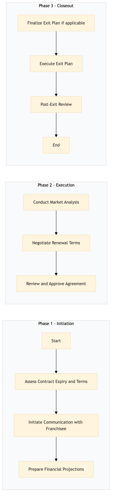

| Role | Steps |
|---|---|
| Franchise Manager | 1.1 1.2 2.2 2.3 3.1 |
| Revenue Manager | 1.3 |
| Market Analyst | 2.1 |
| Legal Counsel | 2.2 2.3 |
| General Manager | 2.3 3.3 |
| Property Manager | 3.1 3.2 |
| Housekeeping Supervisor | 3.2 |
| Step | Name | Role | System | Input | Output | KPI | Dec? | Exc? | Pain Point / Risk |
|---|---|---|---|---|---|---|---|---|---|
| 1.1 | Assess Contract Expiry and Terms | Franchise Manager | Oracle OPERA Cloud, IDeaS G3 RMS | Current franchise agreement details | Renewal or exit strategy document | Less than 1 week | Y | N | Navigating complex contract terms and conditions |
| 1.2 | Initiate Communication with Franchisee | Franchise Manager | Marriott Bonvoy CRM, Book4Time | Renewal or exit strategy document | Communication plan and schedule | Less than 2 days | N | Y | Maintaining open lines of communication with franchisees |
| 1.3 | Prepare Financial Projections | Revenue Manager | Oracle OPERA Cloud, SynXis CRS | Historical financial data | Financial projection report | Less than 1 week | N | Y | Accurate forecasting in a volatile market |
| 2.1 | Conduct Market Analysis | Market Analyst | Microsoft Power BI, Salesforce | Industry trends and competitor data | Market analysis report | Less than 3 weeks | N | Y | Keeping up with rapid market changes |
| 2.2 | Negotiate Renewal Terms | Franchise Manager, Legal Counsel | Oracle OPERA Cloud, Amadeus Delphi.fdc | Financial projection report, market analysis report | Renewal agreement draft | Less than 2 weeks | Y | N | Balancing business interests with legal compliance |
| 2.3 | Review and Approve Agreement | General Manager, Legal Counsel | Oracle OPERA Cloud, SAP S/4HANA | Renewal agreement draft | Approved renewal agreement | Less than 1 week | Y | N | Ensuring alignment with corporate policies and standards |
| 3.1 | Finalize Exit Plan (if applicable) | Franchise Manager, Property Manager | Oracle OPERA Cloud, Birchstreet Procurement | Approved exit strategy document | Exit plan and checklist | Less than 1 week | N | Y | Managing staff transitions and asset handovers |
| 3.2 | Execute Exit Plan | Property Manager, Housekeeping Supervisor | Oracle OPERA Cloud, Knowcross HotSOS | Exit plan and checklist | Final exit report | Less than 2 weeks | N | Y | Coordinating multiple departments for a smooth transition |
| 3.3 | Post-Exit Review | Franchise Manager, General Manager | Oracle OPERA Cloud, Workday HCM | Final exit report | Lessons learned document | Less than 1 week | N | Y | Identifying areas for improvement in future processes |
The SM-FR-07 process manages the renewal and exit of franchise agreements at Marriott full-service hotels. This ensures seamless transitions between contract periods, maintaining brand standards and operational efficiency.